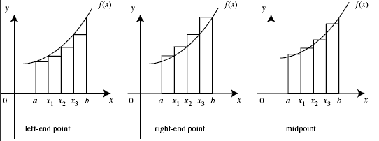

Riemans Integral
Riemans Integral adalah sebuah method dan konsep yang digunakan dalam perhitungan kalkulus
diperuntukkan untuk menghitung luas kurva fungsi pada interval tertentu. Riemans integral ditemukan oleh Bernhard Riemann
pada abad ke-19. Riemans integral digunakan untuk menghitung jumlah area pada “balok-balok” yang pada suatu fungsi yang nilai
kurva mendekati nol.
- Riemans integral dibagi menjadi 3 jenis perhitungan, sebagai berikut:
Right riemann integral
Left riemann integral
Mid riemann integral
Selanjutnya saya akan mencantumkan simulasi macam - macam Riemann Integral.
Dari gambar diatas, merupakan implementasi dari macam-macam Riemann Integral. Terdapat Left Point Riemann yang menggambarkan sudut kiri dari kotak-nya. Kemudian, juga terdapat Right Riemann yang dimana garisnya bersinggungan dengan sudut kanan dari kotak pada Riemann. Kemudian yang terakhir adalah Mid-point Riemann yang bersinggungan dengan garis tengah pada kotak.
berikut adalah implementasi dari riemann integral.
Kita mulai dari penerapan Right riemann integral,
diberikan suatu persamaan integral sebagai berikut.
persamaan diatas untuk angka 0 terletak dibawah symbol integral dan angka 1 terletak diatas symbol integral dan diberikan 5 space grid pada interval integral.
Kita mulai perhitungan integral dengan menggunakan left riemann.
import numpy as np
Pertama-tama kita dapat melakukan import library numpy yang digunakan untuk melakukan kalkulasi matematika yang dibutuhkan.
a = 0
b = 1
n = 5
h = (b-a) / (n-1)
x = np.linspace(a,b,n)
f = x**2
Selanjutnya kita dapat melakukan inisialisasi variable apa saja yang dibutuhkan untuk melakukan kalkulasi pada riemann,
seperti a yang digunakan untuk menandakan titik terendah interval, b digunakan untuk menandakan titik tertinggi pada
interval. n sebagai total space grid yang diinisalisasi, variable h digunakan untuk menghitung lebar dari
setiap balok yang akan dibuat, dan x digunakan untuk mendapatkan jumlah balok yang dapat dibuat dari interval yang tersedia.
setelah itu variable f berposisi sebagai fungsi dari integral.
left_r = h * sum(f[:n-1])
nilai dari left riemann yang berhasil didapatkan adalah dengan implementasi rumus tersebut. Sehingga kita bisa mendapatkan
nilai left riemann dari variable left_r.
Selanjutnya adalah right riemann.
Right riemann adalah cara yang digunakan untuk mendapatkan nilai dari hasil integral pada balok kedua hingga akhir.
right_r = h * sum(f[1::])
Berikut adalah hasil kalkulasi right riemann.
Selanjutnya adalah mid riemann.
Mid riemann adalah teknik yang digunakan untuk mendapatkan nilai tengah dari dari jarak antar balok dengan balok lainnya pada riemann.
mid_r = h * sum(f((x[:n-1] + x[1:])/2))
Berikut adalah kalkulasi untuk mid riemann. Selanjutnya adalah full code untuk mid rieman sebagai berikut.
import numpy as np
a = 0
b = 1
n = 5
h = (b-a) / (n-1)
x = np.linspace(a,b,n)
f = x**2
left_r = h * sum(f[:n-1])
right_r = h * sum(f[1::])
mid_r = h * sum(f((x[:n-1] + x[1:])/2))
print(f"Left riemann: {left_r}") # output untuk left right
print(f"Right riemann: {right_r}") # output untuk right riemann
print(f"Mid riemann: {mid_r}") # output untuk mid riemann
Berikut adalah penjelasan lengkap dari Riemann integral.